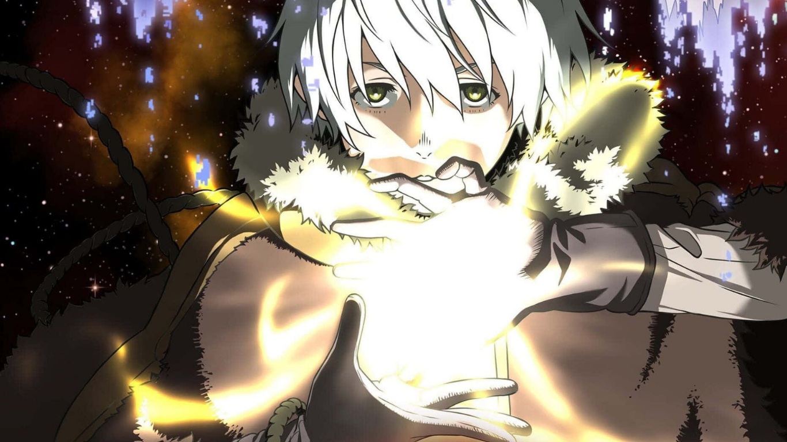

To Your Eternity
9 / 10
It, a mysterious immortal being, is sent to the Earth with no emotions nor identity. However, It is able to take the shape of those around that have a strong impetus. At first, It is a sphere. Then, It imitates the form of a rock. As the temperature drops and snow falls atop the moss, It inherits the moss. When an injured, lone wolf comes limping by and lays down to die, It takes on the form of the animal. Finally, It gains consciousness and begins to traverse the empty tundra until It meets a boy.
Studio : Brain’s Base
Type : TV Series
Release date : April 12, 2012